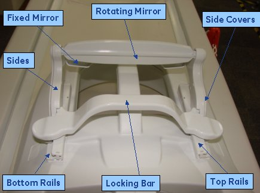
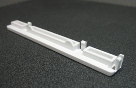
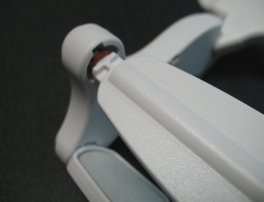
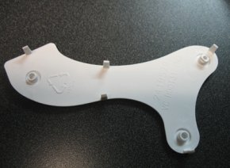
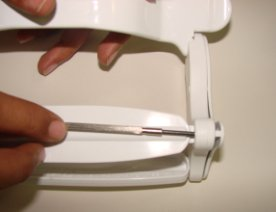
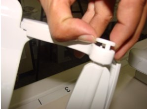
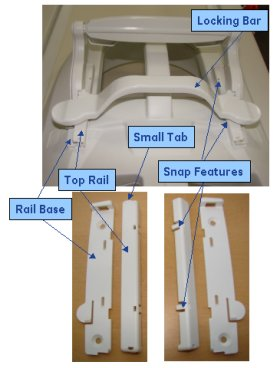

Express Coil: Head Neck Array Mirror Repair/Replacement
Prerequisites
Overview
Follow this process to reassemble the mirror assembly.
Procedure
- notice
- Inspect mirrors to ensure that they are not coming loose from
the plastic housings. If the mirrors are coming loose a new mirror
assembly will be needed.
Figure 1. Parts of the Mirror

- Inspect all parts for broken snap features. If any of the snap
features are broken, a new mirror assembly will be needed.
- There are 2 located on each end of each of the cross pieces
(the locking bar, the rotating mirror, and the fixed mirror). See Figure 2.
Figure 2. Cross-Piece Snap Features

- There are 5 on each of the side covers. See Figure 3.
Figure 3. Snap Features on Side Covers

- There are 3 on each of the top rails. See Figure 4.
Figure 4. Snap Features on Top Rails

- There are 2 located on each end of each of the cross pieces
(the locking bar, the rotating mirror, and the fixed mirror). See Figure 2.
- If any of the cross pieces have been dislocated from their
proper position (see Figure 5), the side covers will need to be removed to
properly re-seat the snap feature. This is due to the locking features
on the inside of the side covers. The locking features are the three
round features shown in Figure 6.
Figure 5. Cross-piece Dislocated

Figure 6. Locking Features on the Side Covers

- If needed, the side covers can be removed by inserting a small
screwdriver from the backside of the sides to disengage the snap feature
on the side covers. (See Figure 7)
Figure 7. Removing Side Covers

- When reassembling the cross pieces with the side it is best to engage all three cross pieces at the same time, rather than one at a time.
- The rotating mirror requires some additional pressure to properly
engage. This is because of the o-rings, which supply the correct amount
of drag to resist rotation. In the picture shown (see Figure 8), firm pressure
is being applied using the thumb and middle finger while gentle pressure
is being applied with the index finger.
Figure 8. Engaging the Rotating Mirror

- The reassembly of the rails below is from the operator’s
manual. To prevent breakage, the mirror is designed to break away
from the anterior face component. In the event that the mirror assembly
is pulled from the anterior face component, the mirror can be reinstalled
using the following procedure:
- Release the lock bar on the mirror assembly, so that the two top rail sections come loose from the mirror assembly.
- Insert the small tab on the top rail in the mirror rail base
and snap the rail down so that the three snap features engage the
rail base. Repeat for the other side.note:
There are right and left sides which are different. See Figure 9.
- Slide the mirror assembly back onto the rails.
Figure 9. Installing Mirror Rails

- If a new mirror assembly needs to be installed the FRU kit includes the top and bottom rails as well as the screws needed. A decision can be made about whether the rails need to be replaced, depending on the condition of the old rails. If they are to be replaced the top rails should be pulled off, and the four screws should be removed. Use the new screws to attach the new lower rails torque to 3 inch-pounds. Install top rails as described in Step 7.
 |
Finalization
Ensure that all joints are firmly seated and that the mirror assembly is functioning properly.